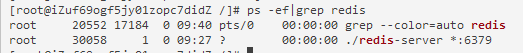
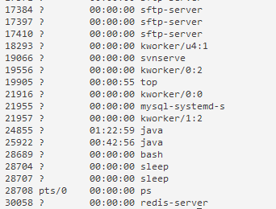
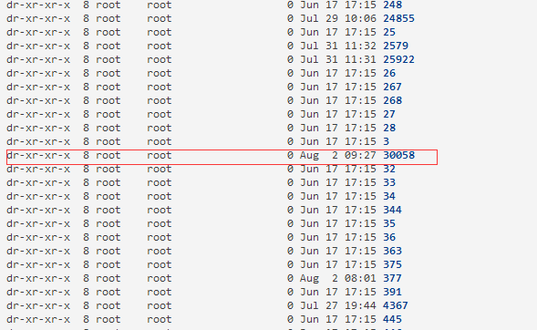
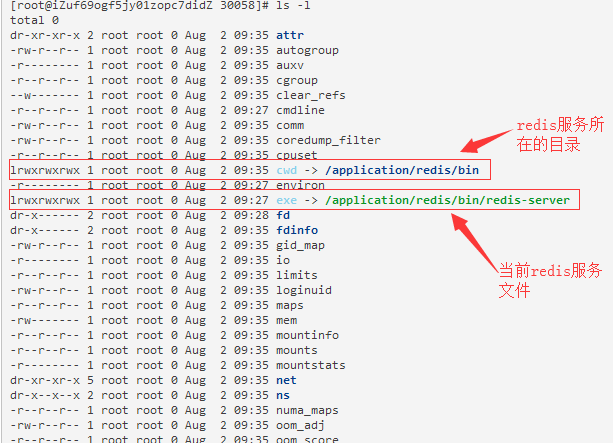

当接手一个不是自己维护的linux服务器，我们常常会想要看看该服务器上是否安装了某个服务，这个服务安装的路径在哪？
redis 是开发过程中常常会用到的一个服务，我这里就以这个服务为例，进行说明。
1.执行ps -ef | grep redis 命令，结果如下：

小结：可以看到，通过ps命令只能查到服务的相对路径，查不到的进程的详细信息，如绝对路径。
2.执行ps -u 系统用户名，进一步确定进程id,
我这里的系统用户名是root，执行ps -u root，结果如下：

结合1的操作结果图可知，redis服务所在的进程id 为30058，
3.进入linux的进程目录/proc,执行ls -l ,可以看到对应的进程目录，结果如下图所示：

4.进入30058这个进程目录，执行 ls -l， 结果如下：

小结：
linux在启动一个进程时，系统会在/proc下创建一个以PID命名的文件夹，在该文件夹下会有我们的进程的信息，其中包括一个名为exe的文件即记录了绝对路径，通过ll或ls –l命令即可查看
cwd符号链接的是进程运行目录；
exe符号连接就是执行程序的绝对路径；
cmdline就是程序运行时输入的命令行命令；
environ记录了进程运行时的环境变量；
fd目录下是进程打开或使用的文件的符号连接